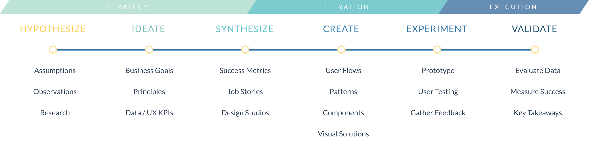

Psychology plays a major role in UX Design, and I strongly feel that your background in Cognitive Science would immensely help you in your design process. However, to get a primer on the broader landscape of UX, I would recommend enrolling in the Interaction Design Course at Coursera. The course touches upon the basics of UX Design, exploring some preliminary techniques, alongside helping you setup a project towards the end of the course. Once you get familiarized with the basics, you can then deep dive into individual techniques and go on to master them.
For anyone starting in UX Design, I highly recommend reading a few books to pivot your thinking into designing with the right mindset. The Design of Everyday Things by Don Norman is a must-read and relevant for all design disciplines. Another book that I highly recommend (and one that's quite relevant to understanding Psychology's role in Design) is 100 Things Every Designer Needs to Know About People by Susan Weinschenk. She packs years of research in bite-sized practical tips and tricks that you can start using today in your designs. If you wish to explore this topic further, you can give Psychology for Designers by Joe Leech a read, but I would hold off on that one for now. Think Like a UX Researcher is another good read that helps you discover how to plan and conduct UX research, analyze data and build a career in UX.
Following are some visual design resources that would help you build better designs for your projects. You don't have to memorize all the specifics and values. Just go through the guidelines; they would help you inform any design limitations/capabilities while designing for various platforms.
Once you are familiar with the basics, you would want to delve deeper into various research techniques and use them in your design process. While the number of these techniques is endless, the trick is to identify the right technique for the right moment. You would greatly benefit from IDEO's Design Kit, which helps you learn a practical approach to solving the world's most difficult problems. Their methods page provides some helpful advice on using the above research techniques in practice such as framing your problem, getting to the root of the problem, interviewing users and more. Also check out this article by Atlassian Design on Problem Framing (this is primarily for teams but the concepts are pretty much the same). If you are really keen on building up your interviewing skills, Interviewing Users by Steve Portigal provides invaluable interviewing techniques and tools that enable you to conduct informative interviews with users and generate insights. The questions for these interviews would vary depending upon the context and the problem set you wish to explore. Bear in mind that this isn't an exhaustive list, but enough to get you started and will help you generate additional questions.
For web, you would want to explore grid systems, responsive design, alongside other foundational elements like use of typography and color. It's also worthwhile exploring some commonly used UI patterns to solve design problems and build your flows. There are websites for inspiration that curate such patterns for inspiration such as http://ui-patterns.com/patterns and https://collectui.com. For instance, if you wish to redesign a Sign Up flow, you can look at some inspiration here on how others have been tackling this. Having said that, while all of this is good for inspiration, at the end of the day, you have to design what works for your users, so take this with a pinch of salt. I know this is a lot, but take it step by step – it would all come together and pay off in the longer run. The good thing is, there are tons of resources out there, and you, combined with your Psychology background, are in a perfect position to embark on this journey. Excited to see how you progress, and feel free to reach out whenever you feel stuck, or require some feedback and a second opinion on things. Cheers!
Starting with Why

Design is no longer an artistic practice and creativity is not just an artist's emotional expression. Designers are the solution to solving problems that enable people, businesses, and technology to impact how the world works. Through personal experience, experiments, and research, I’ve evolved from being an artist into a scientific designer. Designers who are systematic, methodic, and process driven innovate more strategically.
Once you are familiar with the basics, you would want to delve deeper into various research techniques and use them in your design process. While the number of these techniques is endless, the trick is to identify the right technique for the right moment. You would greatly benefit from IDEO's Design Kit, which helps you learn a practical approach to solving the world's most difficult problems. Their methods page provides some helpful advice on using the above research techniques in practice such as framing your problem, getting to the root of the problem, interviewing users and more. Also check out this article by Atlassian Design on Problem Framing (this is primarily for teams but the concepts are pretty much the same). If you are really keen on building up your interviewing skills, Interviewing Users by Steve Portigal provides invaluable interviewing techniques and tools that enable you to conduct informative interviews with users and generate insights. The questions for these interviews would vary depending upon the context and the problem set you wish to explore. Bear in mind that this isn't an exhaustive list, but enough to get you started and will help you generate additional questions.
Moving from Abstract to Concrete
Solving a design problem is essentially finding order in chaos. As designers, we start with an abstract idea that will eventually become a concrete useable product. I’ve adopted a design approach based on Simon Sinek’s talk called How Great Leaders Inspire Action. He evangelizes a mental framework called “The Golden Circle” which inspires change through rearranging how you approach a problem.
Designers often begin a design process by identifying the things we are designing for, what Sinek’s describes as “The What.” This sets limitations and creates an inflexibility to innovate because we’ve prematurely identified the solution. Instead, Sinek works on identifying the unknowns and focuses on “The Why.”
Let’s use my design portfolio as an example:
By identifying these three parts, I have a much better idea of what I want to create. I apply this process to a lot of my projects as the foundation before I start.
DESIGN THINKING METHODOLOGY
In solving real problems, the approach is very similar. I view the design process as having three core parts: strategy, iteration, and execution. Each correlate with the above framework of why, how, and what. The core parts can be broken down into a variety of steps: hypothesize, ideate, synthesize, create, experiment, and validate.
This breakdown is derived from the scientific method. This may sound odd at first but I’ve discovered that problem solving in design is not much different than experimenting in science.
“When you think about designers as problem solvers rather than creatives, you begin to see parallels between the product development process and the scientific method. THE INDUSTRY
Ultimately the solutions designed will have gone through cycles of testing and iterations just like in an experiment. The feedback from users is then adapted into the final designs. I believe that in establishing a process, I’ve changed how I approach design problems. I’ve learned to start with the abstract whys and turn them into concrete whats.